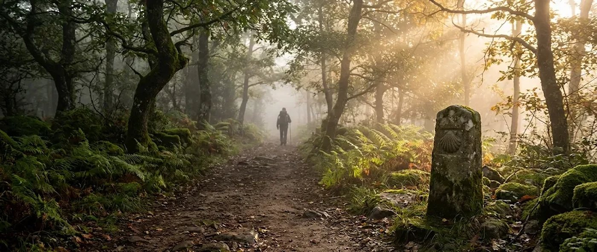
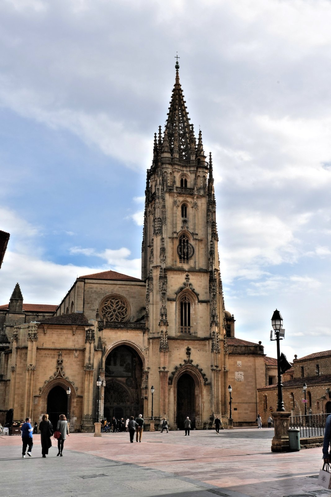
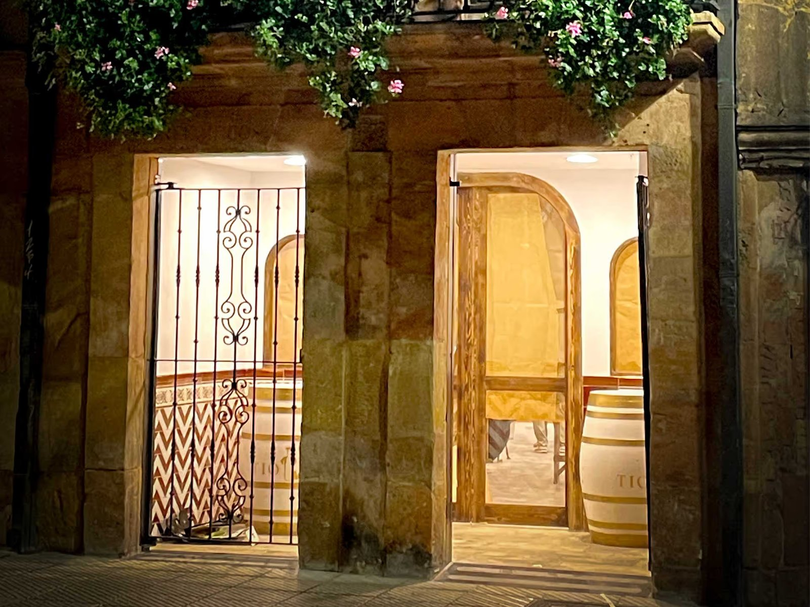

Oviedo · Kilómetro cero
El Camino Primitivo
Todo camino tiene un principio. El primero de los que van a Santiago salió de Oviedo, y esta casa está en la misma ciudad.
El camino original
Un rey, una tumba y trescientos kilómetros
En el siglo IX apareció en Galicia lo que la tradición tiene por la tumba del apóstol Santiago, y el rey de Asturias salió de Oviedo para verla.
Se llamaba Alfonso II, le apodaron el Casto, y la tradición lo recuerda como el primer peregrino. El camino que hizo, de su capital a Compostela, es el que hoy se conoce como Camino Primitivo: la ruta original, anterior a que el Camino Francés se convirtiera en el más transitado.
Salía de una ciudad que entonces era el centro de un reino pequeño y obstinado, y se metía en las montañas del occidente asturiano para llegar a Galicia. Desde entonces, la ruta que sale de Oviedo hacia el oeste lleva su nombre y sigue siendo caminada.
Las distancias varían unos kilómetros según la guía y la variante que se elija. Las del Camino son siempre aproximadas.

La catedral de San Salvador, en Oviedo. Foto: Coralma*, dominio público (CC0).
El Salvador
Donde empieza el camino
“Quien va a Santiago y no al Salvador, visita al criado y deja al Señor.” Dicho tradicional de los peregrinos
El Salvador es la catedral de Oviedo, donde se guarda la Cámara Santa. Es costumbre antigua pasar primero por ella y luego echar a andar.
La ruta
De Oviedo a Santiago
-
Oviedo · Grado · Salas · Tineo
Del casco antiguo al occidente
Se sale de Oviedo hacia el oeste, dejando atrás la catedral, y el camino se mete enseguida entre prados, pueblos y bosques de ribera. Son las primeras jornadas, las de coger el ritmo, y también las de empezar a subir. Tineo es una de las paradas más conocidas de la parte asturiana.
-
Pola de Allande · Berducedo
Las montañas
Es el tramo duro y el más bonito. Después de Pola de Allande el camino se interna en la sierra y, en Berducedo, ofrece una elección: seguir por el valle o tomar la variante de los Hospitales, una ruta alta por la cresta, más larga y más exigente, que muchos eligen por las vistas.
-
Grandas de Salime · A Fonsagrada
La frontera
Pasado Grandas de Salime se cruza el puerto del Acebo y se deja Asturias para entrar en Galicia. A Fonsagrada, ya del otro lado, es una de las paradas habituales antes de seguir hacia el interior de Lugo.
-
O Cádavo · Lugo
La ciudad de la muralla
Lugo conserva entera su muralla romana, declarada Patrimonio de la Humanidad. Es más o menos la mitad del camino y, para muchos, el principio: desde aquí quedan unos 102 kilómetros hasta Santiago, justo por encima de los cien que se piden a pie para obtener la Compostela.
-
Melide · Arzúa · O Pedrouzo · Santiago
Hasta la plaza del Obradoiro
En Melide el Camino Primitivo se une al Camino Francés y, de golpe, el sendero se llena de gente de todas partes. Quedan tres etapas, Arzúa, O Pedrouzo y Santiago, y un último tramo entre eucaliptos que termina en la catedral.
Esto no es una guía de etapas. Para planear el camino, con distancias, albergues y desniveles, hay que ir a una guía actualizada y a la asociación de amigos del camino.

Andalucía también camina
Del sur también se va a Santiago
No hace falta salir de Asturias para ver que el camino empieza en muchos sitios.
Existe un Camino Mozárabe que arranca en ciudades andaluzas, entre ellas Almería, Granada, Jaén y Málaga, se reúne en Córdoba, llega a Mérida y allí enlaza con la Vía de la Plata hacia Santiago. Jaén tiene incluso su propio ramal, que se une al principal en Alcaudete.
Esta casa es esa idea puesta en una calle: un trozo de Andalucía en el sitio donde empieza el otro camino. Un jienense en Oviedo, un cocinero de la Sierra de Cazorla, un aceite que viene de Jaén. Dos extremos de la misma península, sentados en la misma mesa.
Para quien sale de Oviedo
Antes de ponerse en marcha
Estamos en la calle Rosal 22-24, en el casco antiguo de Oviedo. Si vas a hacer el Camino Primitivo, o si lo has hecho y quieres celebrarlo, puedes reservar mesa o escribirnos antes de llegar.
El camino empieza
con una buena mesa
Andalucía en el corazón de Asturias, a un paseo del kilómetro cero.